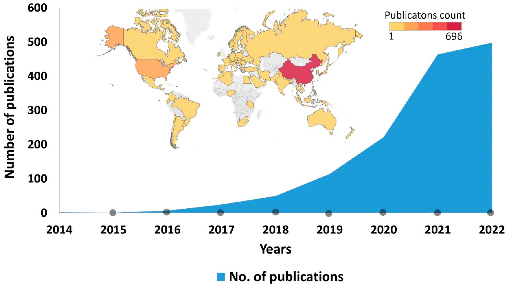
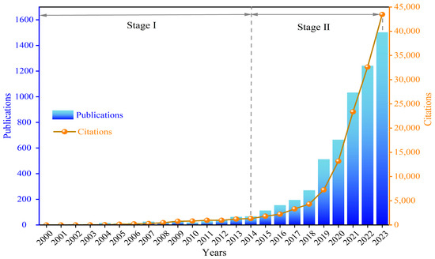

PFAS and Microplastics: Emerging Substances of Concern.
A Selective Environmental Chemistry Review.
Nicholas Kiermaier, · Fall 2025 University of New Orleans, Environmental Chemistry CHEM 5810
Microplastics
A newly emerging contaminant of interest is microplastics (MPs). Despite plastic, and by extension
microplastics, being around for decades, society is now finally being alerted to their contaminant qualities.

Number of publications for research on microplastics from 2014 to 2024
[15]
Microplastics are microscopic (5 mm or less) pieces of plastic that either enter the environment as microplastics or
are created as a result of environmental degradation of larger sized plastic sources. It's difficult to overestimate the vastness of
different types of base plastic polymers that microplastics originate from. There are many variables to tweak to make a new type of plastic
polymer: functional groups, backbone type, crosslinking, copolymers, additives, fillers, and processing
parameters all contribute to the formation of a polymer. The polymer’s molecular form then has differing effects
on its molecular weight, strength, crystallinity, weatherability, fragmentation, density, UV resistance, etc.
Accordingly, the fates, behaviors, and ecological impacts of their generated MPs in the environment will also
likely differ
[11].
Another thing that is difficult to overestimate is how widely distributed microplastics, and plastic in general,
have become throughout the world. According to recent research, some 360 million tons of plastic are generated
each year across the world and only 7% of this material is recycled, meaning that the bulk ends up in the
environment
[16].
Plastics are very durable and last a long time. Microplastics are transported in water, air, wind, and rain, and
can even remain suspended in the atmosphere. There are even studies showing they are transported by earthworms
[16].
Microplastics have been found in soil and snow of remote pristine mountains of the French Pyrenees and in the
majority of remote locations in the USA, such as national parks and national wilderness regions. They have been
found in all water systems tested
[16], and there is even a large floating garbage patch accumulation of
plastic in the central Pacific
[17].
Because of the vast number of types of microplastics and the vast range of ecosystems they inhabit, an
exhaustive paper would be unfeasible; therefore, this paper is limited to selected topics of interest.
Plastic Chemistry
The defining characteristic of a plastic substance is polymerized chains of functional groups that repeat up to
many thousands of times. These functional groups can vary widely and the polymeric chains can be linear or
branched.
Different polymer functional groups and branching types give plastics different characteristics.
For example, amide polymers allow hydrogen bonds to form between polymer chains, which improves chain packing
and makes the resulting substance durable and strong (e.g., nylon). In contrast, including silicon in the
backbone (silicones) yields excellent flexibility and heat resistance, and attached non-polar methyl groups make
it hydrophobic which is useful for water-resistant outdoor products.
Regarding polymeric branching, short-chain branching disrupts interchain packing, providing more flexibility and
lower density (useful for soft sheets like LDPE). Long-chain branching improves melt strength during processing
(e.g., foams and films). Non-branching polymers allow the chains to pack closer together, yielding higher
density and strength.
The global production of plastic resins in recent years is about 360+ MMT annually
[11].
Primary microplastics are those that emerge from the production stage as microplastics. This includes production
pellets/powders and engineered plastic microbeads used in cosmetic formulations, cleaning products, and
industrial abrasives. Purposefully manufactured as plastic fibers or particles in the micron size range and used
to make products such as facial cleansers, cosmetics, or airborne media, they have mainly been discharged into
the environment via wastewater stations.
In contrast, secondary microplastics come from larger plastic items that are degraded and consequently
fragmented—mostly due to weathering—into microplastic particles. Larger plastics are broken down by sunlight,
waves, and other environmental forces.
For primary MPs, production volumes are tractable and their use is beginning to be regulated. However, far more
abundant in the marine environment are the secondary MPs
[11].
The inability of plastic particles to completely or rapidly disintegrate has resulted in their ubiquitous
presence in the marine environment, and even in mountains, caves, deserts, and canyons on the mainland.
Which Plastics Contribute Most to Secondary Microplastics
Biggest microplastic contributors overall, primarily due to volume produced:
Polyolefins (PE, PP, PS)
Packaging, disposable goods, foams
Enormous global tonnage + high fragmentation rates (packaging, foams)
Polystyrene foams (e.g., Styrofoam) are notorious for creating huge numbers of small beads.
Surface water and beach sampling generally find PE and PP to dominate MPs, often with some expanded PS
[11].
PE and PP represent ~30% and ~27% of global resin manufacture; many compounded products still
float in seawater.
The time for complete degradation of inert polymers such as PE or PP in the marine environment is
roughly several hundreds of years; degradation likely involves multiple processes with various kinetics
[11].
Polyesters
Very high use in textiles & bottles (especially textiles)
Fibers shed and sink or stay suspended; widely detected in sediments and biota
Synthetic textiles shed microfibers during laundering, which enter waterways.
Polyamides (nylon)
Large textile/industrial use; tough fibers persist once released
Microfibers resist breakage; notable in marine settings (gear losses)
Microplastics in the Beach and Photic Environment
In beach or photic environments, exposure to solar UVR is a significant mechanism that results in rapid
environmental degradation of polymers. Solar radiation initiates autocatalytic thermal oxidation responsible for
the degradation process
[11].
Photo-oxidative degradation of polymers involves chromophoric groups that absorb UV light, become excited, lose
H, and then react with oxygen to form chain-scission radicals and peroxy radicals. These radicals chain-react
under continued UV exposure, causing further breakdown and crosslinking of polymer chains and creating numerous
new oxygen-containing functional groups on the backbone (aldehydes, ketones, carbonyls, etc.)
[12].
Early in degradation, crystallinity often increases because the more disordered regions are more susceptible to
photo-oxidation and allow greater oxygen diffusion, which leads to more ordered material as the disorder
degrades
[11].
PE, PP, PS, PET, polycarbonate (PC), and poly(vinyl chloride) (PVC) all turn yellow to yellow-orange as a result
of oxidation due to degradation products of the polymer itself (as with PVC, PC, PS) or those from thermal
stabilizers used in the resin.
Degradation can be measured using FTIR: the carbonyl group (C=O) gives a strong band around 1700–1750 cm⁻¹; as
weathering progresses, the area under this peak grows, indicating more oxidation.
Photo-oxidation primarily affects the surface layer because UV does not penetrate deeply. This degraded surface
is then believed to delaminate via environmental/biotal weathering and swelling. In this surface-ablation mode,
large numbers of daughter fragments with a narrow particle-size distribution are expected once weathering runs
to completion
[11].
These fragments are typically larger than the 5 mm microplastic cutoff; however, it is plausible that the
cycle repeats, degrading smaller particles ad infinitum.
Microplastics in the Marine Environment
While biodegradation (and even hydrolysis) does occur at sea, these reactions proceed too slowly to produce
significant environmental degradation of common plastics under outdoor conditions. The beach zone is most
conducive to rapid weathering degradation
[11].
No known mechanism exists for degradation, and thus removal, of plastics lying beyond the photic zone,
suggesting slow accumulation in the benthos over the years.
In aqueous environments, plastic particles made of polyvinyl chloride, nylon, and polyethylene tend to sink
more, while polypropylene, polyethylene, and polystyrene often float or remain suspended. Alterations to density
through processes like biofouling and adsorption of organic matter can increase sinking, affecting transport
[13].
Floating MPs typically accumulate encrusting foulants that ballast them over time, increasing apparent density
and causing sinking in the water column and deposition in deep water or sediments. Smaller meso- and
nanoplastics can form homo-aggregates or co-aggregates with phytoplankton and sink with the biomass. Transparent
exopolymer particles (TEPs); acidic, sticky polysaccharides released mainly by phytoplankton and bacteria; carry
negative charge and effectively entrain dust, detritus, and other suspended matter, flocculating MPs and
promoting sinking. Floating in surface waters is therefore often a transient phase before particles are fouled,
entangled with other debris, grazed, or transported to benthic sediment
[11].
PFAS
Another contaminant to emerge as a substance of concern within the past 10 years is a class of chemicals known
as PFAS. PFAS have also been used in industry and commercial products for decades, but society is only recently
being alerted to their toxic qualities.

Number of publications and citation frequency for research on PFASs from 2000 to 2023
[14]
PFAS Chemistry
PFAS stands for per- and polyfluoroalkyl substances. It is a family of thousands of different molecules with the
defining feature being multiple fluorines attached to an alkyl chain. Because both fluorine and hydrogen can
bond to carbon via a single valence electron, they are swappable on carbon backbones. Chemists can take an alkyl
chain and fluorinate it, replacing hydrogen with fluorine atoms. For example, a normal fatty acid such as
octanoic acid (C₇H₁₅COOH) has hydrogens on its carbon chain; its PFAS cousin, PFOA (perfluorooctanoic acid,
C₇F₁₅COOH), has all those hydrogens replaced by fluorines. PFAS are commonly produced through electrochemical
fluorination or fluorotelomerization
[5].
1. Strength:
C–H bonds are relatively weak (~410 kJ/mol) and can be broken down by enzymes, sunlight, or microbes.
C–F bonds are among the strongest in chemistry (~485 kJ/mol), resisting breakdown and persisting in the
environment (“forever chemicals”).
Activating C–F decomposition requires very high temperatures (~1,000–1,250 °C / 1,832–2,282 °F).
2. Electronegativity:
Fluorine is the most electronegative element, pulling electrons strongly from carbon and giving fluoroalkyl
molecules unique characteristics.
Strong inductive effects: CF₃CF₂OH (pKₐ ≈ 12) is much more acidic than its ethanol cousin (pKₐ ≈ 16).
C–F bonds are highly polarized with weak van der Waals forces, yielding molecules with very low surface
energy. They resist interactions with other molecules (dipole, dispersion, or hydrogen bonding)—the
“introverts” of molecules.
These properties create PFAS molecules that are extremely durable, resistant to chemicals, temperature,
sunlight, and biodegradation, while repelling both oil and water. This durability makes PFAS useful in many
products but also extremely difficult to dispose of. Studies report less-than-complete destruction of PFAS even
at 930–980 °C (1,706–1,796 °F)
[5].
PFAS Usage
PFAS products are widely used. In 2020, the United States manufactured or imported approximately 2.9 billion
pounds of PFAS
[5].
PFAS confer corrosion resistance, abrasion resistance, hydrophobicity, leveling, spreading, and wetting. Product
examples include waterproof fabrics (nylon, yoga pants, carpets), shampoo, feminine hygiene products, mobile
phone screens, wall paint, furniture, adhesives, food packaging, firefighting foam, and electrical wire
insulation. The cosmetic industry also uses PFAS in many cosmetics and personal care products (lipstick,
eyeliner, mascara, foundation, concealer, lip balm, blush, nail polish)
[4], [5].
PFAS Lifecycle and Routes of Exposure
PFAS have several lifecycle stages, each capable of releasing PFAS and resulting in environmental exposure
[5]:
Human contact via food storage, cosmetics, or clothing.
Constituent, intermediate, or degradation molecules released into the environment (airborne, solid, liquid).
For example, side-chain fluorinated polymers can degrade into non-polymeric PFAS products; a study of molded
“compostable” fiber bowls detected 6:2 FTOH and transformation products of fluorotelomer unsaturated
carboxylic acids
[5].
Additional PFAS molecules may form during disposal attempts.
Landfill leaching.
Biosolids from wastewater treatment processes.
PFAS Regulation
Global regulation varies. The EU is working to phase out all non-essential PFAS uses, with enforcement beginning
in 2026
[6], [8].
France has banned most PFAS in consumer products starting in 2026, with all textiles included by 2030
[7].
The USA has enforceable limits for 6 PFAS molecules.
Out of thousands of PFAS molecules, only six are regulated in the USA. EU law allows sweeping regulation of PFAS
classes, but in the US each molecule must be proven harmful before restriction under the Toxic Substances
Control Act (TSCA). Section 6 requires EPA to show “unreasonable risk” for each chemical substance, not a class,
forcing case-by-case evaluation
[9], [10].
PFAS Alternatives
Research continues into PFAS substitutes. Candidate classes include:
Silicones and siloxanes (coatings, packaging)
Sulfosuccinates and other anionic surfactants (wetting agents)
Nonionic surfactants such as acetylenic diols (paints, varnishes)
Other materials under study: graphene, ceramics (boron nitride, titanium dioxide)
Each alternative has trade-offs in performance and cost
[5].
Conclusion
Microplastics and PFAS are two of the most significant emerging contaminants, each highlighting how
innovation can outpace science. Both pollutants are examples of the difficulties of managing
substances designed for high durability but lacking clear end-of-life and disposal pathways.
Mitigation strategies must therefore
prioritize: prevention at the source, better product and waste design, and investment in safer alternatives.
Continued scientific research and global monitoring and coordinated policy action remain essential. Taken together, the chemistry,
distribution, and
persistence of microplastics and PFAS serve as a cautionary lesson: the properties that make materials useful
can also make them environmental threats.
Wikipedia contributors. (n.d.). PFAS. In Wikipedia, The Free Encyclopedia.
Retrieved September 19, 2025, from
https://en.wikipedia.org/wiki/PFAS
U.S. Consumer Product Safety Commission. (2022).
Characterizing PFAS Chemistries, Sources, Uses, and Regulatory Trends in U.S. and International Markets [White
paper].
Retrieved from
https://www.cpsc.gov/s3fs-public/CPSC-PFAS-WhitePaper.pdf
Yin, Z., Li, C., Li, X., & Wang, C. (2025). Bibliometric Analysis of Per- and Polyfluoroalkyl Substances
(PFASs) from 2000 to 2023 Based on Web of Science Database.
Water, 17(1), 6.
https://doi.org/10.3390/w17010006
Gopalakrishnan, K. K., Sivakumar, R., & Kashian, D. (2023). The Microplastics Cycle: An In-Depth Look at a
Complex Topic.
Applied Sciences, 13(19), 10999.
https://doi.org/10.3390/app131910999
Kumara, M., Chaudhary, V., Kumara, R., Chaudhary, V., & Srivastav, A. L. (2025).
Microplastics, their effects on ecosystems, and general strategies for mitigation of microplastics: A review of
recent developments, challenges, and future prospects.
Science of the Total Environment, Article S2950305125000063.
https://doi.org/10.1016/j.scitotenv.2025.000063